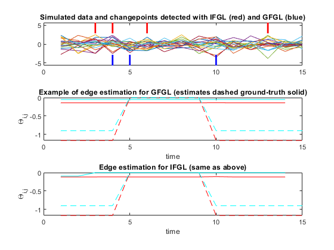
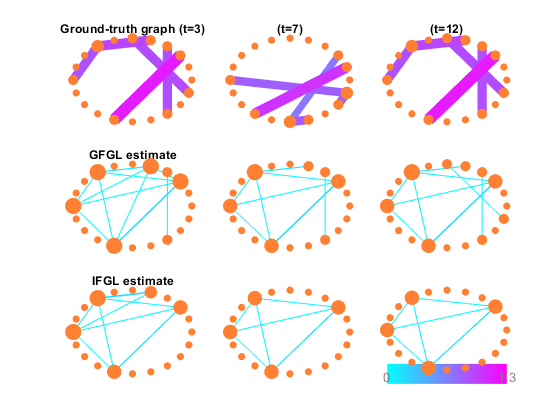

Comparison between GFGL and IFGL in the high-dimensional P>N setting
lambda1G - strength of sparsity regulariser for GFGL lambda1I - sparsity for IFGL lambda2G - strength of smoothing for GFGL lambda2I - smoothing for IFGL
This file simulates a data-set and then runs the ADMM solver for IFGL/GFGL problems in an attempt to recover the dynamic sparsity patterns
Alex Gibberd (2015) - UCL Department of Statistical Science
Contents
Note: To run this demo with different paramters simply run the function >>hdDemo(lambda1G,lambda2G,lambda1I,lambda2I);
function [ ] = hdExample(lambda1G,lambda2G,lambda1I,lambda2I)
Set Default parameters
These are selected to illustrate some of the differences between GFGL and IFGL, such that they produce similarly sparse results.
warning('off'); % Overwrite warnings when viewing via publish if(nargin<1) lambda1G=0.4; end if(nargin<2) lambda2G=13; end if(nargin<3) lambda1I=0.4; end if(nargin<4) lambda2I=3; end display(['Using parameters: lambda1G=',num2str(lambda1G),' lambda2G=',num2str(lambda2G),' lambda1I=',num2str(lambda1I),' lambda2I=',num2str(lambda2I)]);
Using parameters: lambda1G=0.4 lambda2G=13 lambda1I=0.4 lambda2I=3
Simulate/Load Data
T=15; K=2; scale=1; P=20; M=5; display('Generating ground-truth with following structure:') display(['#changepoints=',int2str(K),', scale=',int2str(scale),... ', T=',int2str(T),', #variables=',int2str(P),... ', #active-edges=',int2str(M)]); % Generate ground-truth precision/covariance matrices % [ sigmainv,sigma ] = genPeriodGraph( P,M,scale,K,T ); GT=load('gtHD.mat'); % Load ground-truth graph sigma=GT.sigma; sigmainv=GT.sigmainv; % % [ y ] = simulateData( sigma ); % Generate Data y=GT.y;
Generating ground-truth with following structure: #changepoints=2, scale=1, T=15, #variables=20, #active-edges=5
RUN GFGL
As discussed in the paper, our implementation of GFGL is highly dependent on the number of changepoints (K) estimated. Increasing lambda2G decreases the number of estimated changepoints.
display('Running GFGL'); tic [ ThetaG,ZG,cpG,SG,~,~ ] = GFGL( y,lambda1G,lambda2G,10 ); t=toc; display(['GFGL took t=',int2str(t),'seconds to find K=',num2str(length(cpG))]);
Running GFGL GFGL took t=0seconds to find K=3
RUN IFGL
The independent fuseed approach solves for each edge seperately. We make use of the efficient fused lasso signal approximator algorithm within the SLEP package.
tic [ ThetaI,ZI,SI,~ ] = FGL( y,lambda1I,lambda2I,10 ); t=toc; cpPos = cpCluster( ZI,0.00001 ); cpI=find(cpPos~=0); display(['IFGL took t=',int2str(t),'seconds to find K=',num2str(length(cpI))]);
IFGL took t=0seconds to find K=4
Output Results
We look at the ground truth structure, and compare the estimated and known structure with both IFGL and GFGL.
% Find true edges [ ~,edges ] = countEdges( squeeze(sigmainv(:,:,1)),0.000001 ); % Extracts true edges at t=1
Changepoints and Edge estimates
figure(1) set(gcf, 'Color', [1,1,1]); subplot(3,1,1); plotCP(cpG,cpI,y,0); title('Simulated data and changepoints detected with IFGL (red) and GFGL (blue)'); subplot(3,1,2); coefCompare(edges(1:2,:),ThetaG,sigmainv); title('Example of edge estimation for GFGL (estimates dashed ground-truth solid)'); xlabel('time'); ylabel('\Theta_{i,j}'); subplot(3,1,3); coefCompare(edges(1:2,:),ThetaI,sigmainv); title('Edge estimation for IFGL (same as above)'); xlabel('time'); ylabel('\Theta_{i,j}');
These results compare the changepoint estimates, alongside the estimation of 2 example edges within the simulated data-set. In the high-dimensional case there is not such an obvious difference between the edge estimates, however, one notes that the estimation of changepoints is perhaps improved through the knowledge of grouped changepoints across the graphs.
Graphical estimation
figure(2) set(gcf, 'Color', [1,1,1]); subplot(3,3,1); plotGraph(squeeze(abs(sigmainv(:,:,3))),10,0); title('Ground-truth graph (t=3)') subplot(3,3,2); plotGraph(squeeze(abs(sigmainv(:,:,7))),10,0); title('(t=7)') subplot(3,3,3); plotGraph(squeeze(abs(sigmainv(:,:,12))),10,0); title('(t=12)'); subplot(3,3,4); plotGraph(squeeze(abs(ZG(:,:,3))),10,0); title('GFGL estimate'); subplot(3,3,5); plotGraph(squeeze(abs(ZG(:,:,7))),10,0); subplot(3,3,6); plotGraph(squeeze(abs(ZG(:,:,12))),10,0); subplot(3,3,7); plotGraph(squeeze(abs(ZI(:,:,3))),10,0); title('IFGL estimate'); subplot(3,3,8); plotGraph(squeeze(abs(ZI(:,:,7))),10,0); subplot(3,3,9); plotGraph(squeeze(abs(ZI(:,:,12))),10,1);
In the high-dimensional case with only a small number of data points, it is very hard to recover the true sparsity pattern. The main observation here is that both the estiamtes for IFGL and GFGL share some common estimated structure. With only a few allowed changepoints the structure of the graph is constrained to be fairly constant over time.
Discussion
The results plotted here (if viewed via MATLAB publish) are a result of the settings specified in this file. We discuss here how one may observe differences between the two GFGL and IFGL estimation routines. In this high-dimensional case, there is not much data to play with, we should not expect too much from our analysis. Indeed in this case, it appears that the graphical recovery is rather poor from both the IFGL and GFGL routines, although they both recover quite similar graphical structures. The main difference between the routines, appears to be the ability to estimate changepoints across the graph. In this case GFGL appears to perform slightly better, enabling us to group changes across the estimate edges. We also note, that it appears that utilising the joint sparse and smooth assumptions shows some benefit here. For example, if one runs this demo with the lambda1's set to zero, ie no sparsity is assumed, then the changepoint estimation seems to become less robust.
end